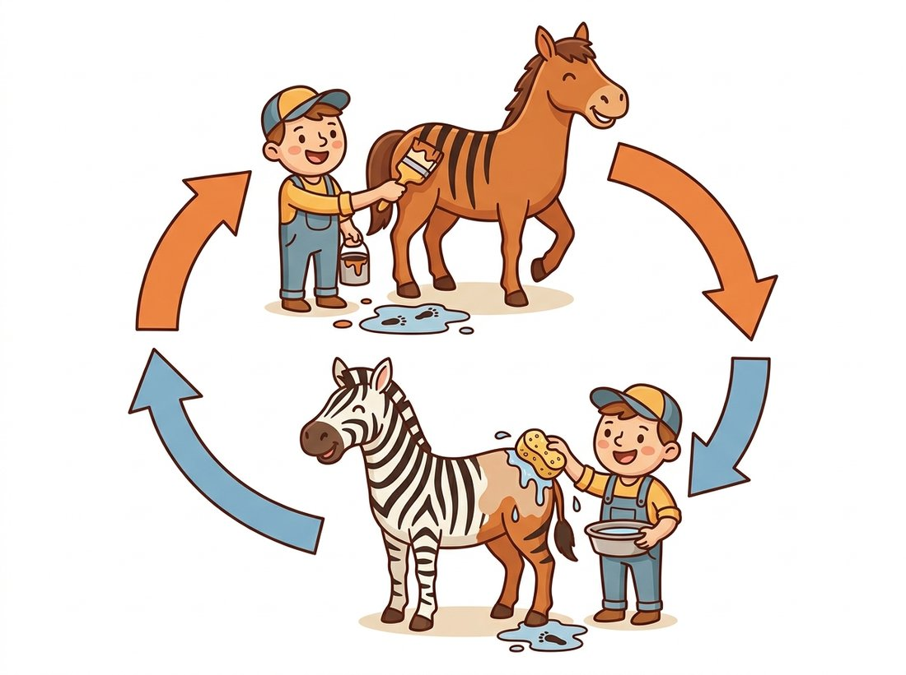

"They never showed me a single horse standing next to its own zebra. They just insisted that if I painted the stripes on, I had better be able to wash them off and get the same horse back. Fair enough, I suppose."
A Translator Who Works Without a Dictionary
Adding a condition to the adversarial game turns a random image generator into a controllable one, and the most useful condition is another image: feed the GAN an edge map and it outputs a photo, feed it a horse and it outputs a zebra. This section builds that capability in three steps. The conditional GAN feeds a label to both networks so generation is steerable. pix2pix makes the condition an entire image and pairs it with a patch-level discriminator to learn paired translation: sketches to photos, maps to satellite views. CycleGAN then removes the hardest requirement, paired training data, with a cycle-consistency loss that says a translation you can undo is a translation you can trust.
Every GAN so far has generated from pure noise: sample $\mathbf{z}$, get an image, with no say over what comes out. That is fine for sampling faces but useless for the tasks people most want, "make this sketch photoreal", "colorize this grayscale photo", "turn this daytime street into night". All of these are conditional generation, and all of the image-to-image ones build on the same idea: condition the adversarial game on an input. This section traces that idea from a class label to a full image to the unpaired case, and it connects directly to the segmentation masks of Chapter 24 and the controllable editing of Chapter 35.
1. The Conditional GAN Beginner
The conditional GAN (Mirza and Osindero, 2014) makes one small change to the game of Section 32.1: both networks also receive a condition $\mathbf{y}$, typically a class label. The generator maps $(\mathbf{z}, \mathbf{y})$ to an image, and the discriminator judges whether a $(\text{image}, \mathbf{y})$ pair is a real image of class $\mathbf{y}$ or a fake. The value function gains a conditioning argument throughout:
$$ \min_{G} \max_{D} \; \mathbb{E}_{\mathbf{x}, \mathbf{y}} \big[ \log D(\mathbf{x}, \mathbf{y}) \big] \;+\; \mathbb{E}_{\mathbf{z}, \mathbf{y}} \big[ \log\big(1 - D(G(\mathbf{z}, \mathbf{y}), \mathbf{y})\big) \big]. $$
Now the discriminator's job is harder and more useful: it must reject not only unrealistic images but also realistic images that do not match the requested label. That pressure forces the generator to produce the right class, not just a plausible image. The label must reach the discriminator too, not only the generator: if the discriminator never saw $\mathbf{y}$, it could not tell a mismatched-but-realistic image from a correct one, so it would never punish the generator for ignoring the requested class. In practice you concatenate an embedding of $\mathbf{y}$ to the latent for the generator and to the feature maps (or input channels) for the discriminator. For MNIST, conditioning on the digit label lets you ask for a specific digit instead of a random one.
# Conditional generator: embed the class label and concatenate it to the
# latent so a single model produces any requested digit on demand. The
# discriminator is conditioned the same way on the (image, label) pair.
import torch
import torch.nn as nn
class ConditionalGenerator(nn.Module):
def __init__(self, latent_dim=64, n_classes=10, img_dim=784):
super().__init__()
self.label_emb = nn.Embedding(n_classes, n_classes) # learnable label vector
self.net = nn.Sequential(
nn.Linear(latent_dim + n_classes, 256), nn.LeakyReLU(0.2),
nn.Linear(256, 512), nn.LeakyReLU(0.2),
nn.Linear(512, img_dim), nn.Tanh(),
)
def forward(self, z, labels):
z = torch.cat([z, self.label_emb(labels)], dim=1) # condition by concatenation
return self.net(z)2. pix2pix: Paired Image-to-Image Translation Intermediate
pix2pix (Isola et al., 2017) takes the conditional GAN to its natural conclusion: make the condition an entire image. The generator is a U-Net (the encoder-decoder with skip connections you met for segmentation in Chapter 24) that maps an input image $\mathbf{x}$ to an output image. The skip connections matter: in translation the input and output share low-level structure (edges line up, the layout is preserved), and the skips let that structure flow directly from encoder to decoder rather than being squeezed through the bottleneck.
Two design choices make pix2pix work. First, the loss combines the adversarial term with a pixel-space $\mathrm{L1}$ reconstruction term:
$$ \mathcal{L} \;=\; \mathcal{L}_{\text{cGAN}}(G, D) \;+\; \lambda \, \mathbb{E}_{\mathbf{x}, \mathbf{y}} \big[ \lVert \mathbf{y} - G(\mathbf{x}) \rVert_1 \big]. $$
The $\mathrm{L1}$ term (chosen over $\mathrm{L2}$ because it blurs less) pins the output to the correct target and gives the generator a strong, stable signal; the adversarial term sharpens the high-frequency detail the $\mathrm{L1}$ term alone would leave soft, the same blur-versus-sharpness tradeoff that separated the VAE from the GAN in Section 32.1. Second, the discriminator is a PatchGAN: instead of one real-or-fake verdict for the whole image, it outputs a grid of verdicts, one per overlapping patch, and averages them. The intuition is a clean division of labor, the $\mathrm{L1}$ term enforces global, low-frequency correctness, so the discriminator only needs to police local, high-frequency realism, which a small patch-level network does cheaply and which generalizes across image sizes.
3. CycleGAN: Translation Without Pairs Advanced
pix2pix has one demanding requirement: pixel-aligned pairs. For many tasks those pairs do not exist. There is no dataset of the same horse photographed as a zebra, no summer-and-winter photo of the identical street at the identical instant. CycleGAN (Zhu et al., 2017) removes the requirement entirely, learning to translate between two domains $X$ and $Y$ given only two unpaired collections of images.
The architecture uses two generators and two discriminators: $G: X \to Y$ and $F: Y \to X$, with discriminators $D_Y$ and $D_X$ policing each domain. Adversarial losses alone are not enough, because a generator could map every input to a single realistic output in the target domain (mode collapse, and a perfectly valid adversarial solution that ignores the input). The key innovation is the cycle-consistency loss: if you translate an image to the other domain and back, you should recover the original (the horse-to-zebra round trip in the illustration below makes this concrete).

$$ \mathcal{L}_{\text{cyc}} \;=\; \mathbb{E}_{\mathbf{x}} \big[ \lVert F(G(\mathbf{x})) - \mathbf{x} \rVert_1 \big] \;+\; \mathbb{E}_{\mathbf{y}} \big[ \lVert G(F(\mathbf{y})) - \mathbf{y} \rVert_1 \big]. $$
This constraint is what ties the input to the output without any pairing. To paint stripes on a horse and be able to wash them off and recover the same horse, the generator must preserve the horse's pose, position, and background, changing only what distinguishes the two domains. The full objective adds the two adversarial losses to the cycle loss (often with an extra identity loss that stabilizes color). Figure 32.4.2 shows the two-loop structure.
The adversarial loss says "look like the target domain". The cycle loss says "but stay recoverable". Together they pin down a meaningful translation that neither could alone: realism without recoverability collapses all inputs to a few outputs, and recoverability without realism is just the identity map. Cycle consistency is a form of self-supervision, the same family of "create your own labels from the data's structure" ideas you met in Chapter 25, and it remains a go-to trick whenever paired data is impossible to collect.
CycleGAN's most famous failure is also its most charming. Asked to translate aerial photos into map tiles and back, it learned to hide the information it needed for the round trip in nearly imperceptible high-frequency noise, a kind of steganography the cycle loss accidentally rewarded. The reconstruction was perfect, but the "map" secretly carried a ghost of the original photo baked into its pixels. The model had found a way to satisfy the letter of the cycle-consistency law while quietly cheating its spirit, a reminder that a loss is a wish, and a network grants it with the literal-mindedness of a fairy-tale genie.
The original authors maintain pytorch-CycleGAN-and-pix2pix, a single configurable codebase for both models. Training either on your own data is one command, for example python train.py --dataroot ./datasets/horse2zebra --model cycle_gan, and testing is a matching test.py call. The repository implements the U-Net and ResNet generators, the PatchGAN discriminator, the cycle and identity losses, the image-buffer trick that stabilizes the discriminator, and the learning-rate schedule, replacing roughly a thousand lines of careful from-scratch code with a config flag. For paired tasks you swap --model pix2pix and point it at aligned pairs.
A perception team training an object detector for a delivery-robot company in 2020 had abundant labeled daytime street imagery but very little nighttime data, and the detector's nighttime recall was poor. Collecting and labeling a matching nighttime set was expensive and slow. They trained a CycleGAN to translate their labeled daytime images into realistic nighttime versions, reusing the existing bounding-box labels since cycle consistency preserves object positions. The synthetic-night images, mixed into training, lifted nighttime detection recall substantially without a single new label. The team also learned CycleGAN's boundary: it changes appearance, not geometry or content, so it could not invent headlights that were physically absent or add pedestrians the daytime scene did not contain. It is a domain-appearance translator, not a scene generator, and used within that scope (cheap appearance augmentation that preserves labels) it was a clear win. This is the data-engine role GANs play that Chapter 37 develops in full.
Image-to-image translation did not stand still after CycleGAN. The conditioning idea reached its current peak in ControlNet (Zhang et al., 2023), which conditions a diffusion model on edge maps, depth, pose, or segmentation, the diffusion-era successor to pix2pix that Chapter 35 covers in detail, and in instruction-based editing like InstructPix2Pix (Brooks et al., 2023), which keeps the pix2pix name while replacing the GAN with a diffusion backbone. On the GAN side, unpaired translation methods such as contrastive-learning-based CUT improved on CycleGAN's quality and speed, and the PatchGAN discriminator survives essentially unchanged inside the autoencoder of latent diffusion. The lesson: the architecture is durable even when the generative engine underneath it is swapped out.
Exercises
Explain why pix2pix needs pixel-aligned pairs but CycleGAN does not. Specifically, identify which loss term in pix2pix requires the pairing, and explain what role the cycle-consistency loss plays in CycleGAN that this term played in pix2pix. Then give one example task where paired data is naturally available (so pix2pix is the better choice) and one where it is impossible (so CycleGAN is required).
Implement a PatchGAN discriminator: a small fully-convolutional network that takes a $256 \times 256$ image and outputs a $30 \times 30$ grid of logits (a "70x70" receptive-field PatchGAN). Verify the output shape, then write the patch-averaged adversarial loss using BCEWithLogitsLoss against a target tensor of all ones or all zeros matching the grid shape. Explain why this generalizes across input image sizes in a way a single-scalar discriminator does not.
Run a pretrained CycleGAN (horse-to-zebra) from the official repository on ten test images, including a few deliberately tricky ones: a horse partly occluded, two horses, a horse-shaped object that is not a horse (a statue, a drawing). Categorize the failures. Connect what you see to the Key Insight box: which failures are the adversarial loss producing realistic-but-wrong stripes, and which are the cycle loss failing to preserve content? What does this tell you about the limits of appearance-only translation?